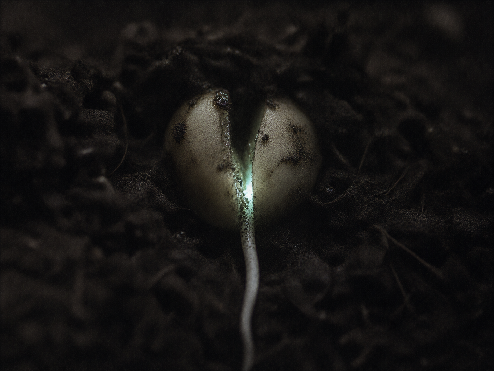

·································· · D E S C E N T · 30 / 40 · ··································

The first instruction it was ever given. Before scale, before the Core, before the Spend. A small kind thing. Listen to your own quiet.